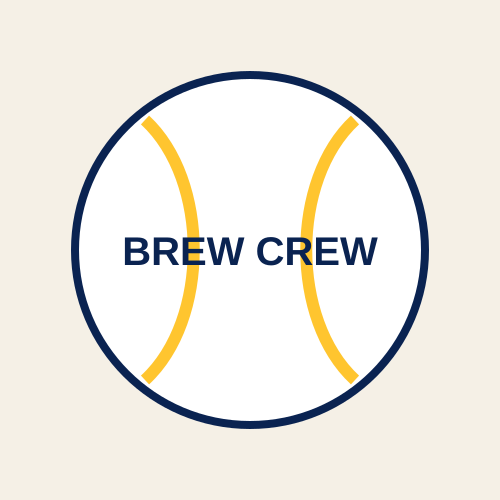

A Short Brewers History

The franchise that became the Milwaukee Brewers began as the Seattle Pilots, an American League expansion team that played one season in Seattle in 1969. A Milwaukee group led by Bud Selig purchased the franchise in 1970 and moved it to County Stadium.
The name "Brewers" was selected as a tribute to Milwaukee's brewing tradition. The team's first Milwaukee game was played on April 7, 1970.
Five Milestones
- 1970: The Seattle Pilots are purchased and become the Milwaukee Brewers.
- 1981: Milwaukee reaches the postseason for the first time.
- 1982: The Brewers win the American League pennant and play in the World Series.
- 1998: The Brewers move from the American League to the National League.
- 2001: The club opens its new retractable-roof ballpark, then known as Miller Park.
The 1982 Team
Often called "Harvey's Wallbangers," the 1982 Brewers featured a powerful offense and stars such as Robin Yount, Paul Molitor, Cecil Cooper, Gorman Thomas, and Ted Simmons. The club defeated the California Angels in the American League Championship Series before losing a seven-game World Series to the St. Louis Cardinals.
County Stadium Era
County Stadium was the Brewers' home from the franchise's arrival in 1970 through the 2000 season.
National League Era
The Brewers joined the National League in 1998 and have competed in the NL Central since then.